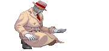
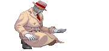
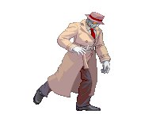
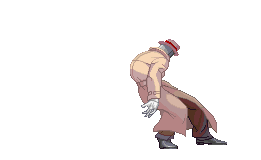

Bruisers have some overlap with grapplers and rushdown fighters. They are usually big-body characters, who have tools or armor that allows them to push through the opponents attacks, and special defense mechanisms that enhance their survivability. They have some command grabs, but do not solely rely on them for attacks like grapplers do. And unlike the rushdown characters, they have more of an average attack and move speed, but still aim to apply pressure and get close to their opponents to deal big damage.
Toolkit
 

- Close range attacks
- Larger health pool
- Special defense mechanisms
- Self healing
- Armor
Pros
- Durable
- Armored attacks
- Moderately high damage output
Cons
- Lacks range
- Larger hitbox
- Relies on mid to close range attacks
How should I play as this fighter?
Get to know your special defense tools and use them while closing the distance between you and your opponent. You are more durable and have a lot less to lose engaging in close-range brawls. Try to keep your opponent in this pocket as your attacks may lack range.
How can I beat this fighter?
 Most bruisers have short to mid-range attacks so keep them out of range. They will then need to get close again to deal damage, long range attacks can combat this. And be careful if you need to close in, as they may have special defense gimmicks and a lot more health than you do.Examples:
- Q (Street Fighter III: 3rd Strike, 1999)
- E. Honda (Street Fighter II: The World Warrior, 1991)
- Aganos (Killer Instinct, 2013)
Evelynn's Notes
Difficulty: ★ ★ ★ ☆ ☆Bruisers are more of a niche archetype compared to others, their unique defense strategies may take some time to learn. The game plan is straightforward, but will take time to execute well enough to combat skilled players or fighters out of their range.